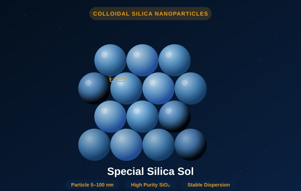

High-purity colloidal silicon dioxide in stable aqueous dispersion. Controlled nanoparticle size from 5 to 100 nm. For investment casting ceramic shells, CMP polishing slurries, anti-corrosion coatings, and advanced catalyst substrates.

Silica sol (colloidal silica) is a stable aqueous suspension of amorphous silicon dioxide nanoparticles in the 5–100 nm size range. Unlike fumed silica or precipitated silica, colloidal silica particles are discrete, spherical, and mono-dispersed — giving the product unique properties: high surface area, excellent chemical stability, and strong binding capability with inorganic substrates.
Our Special Silica Sol is produced by our proprietary ion-exchange and growth-control process, yielding tightly controlled particle size distributions across multiple grades. High-purity precursors and rigorous production controls result in low Na⁺ content and minimal metal contaminants — critical for semiconductor CMP applications and for achieving consistent ceramic shell strength in high-temperature investment casting of aerospace superalloys.
The colloidal silica particle surface is covered with silanol groups (Si-OH) that form strong chemical bonds with ceramic, metal oxide, and polymer surfaces. This makes silica sol an exceptionally effective inorganic binder and adhesion promoter in advanced materials applications. Unlike organic binders, it burns out cleanly at high temperature — leaving a pure silica network with no carbon residue in casting shells or refractory products.
| Parameter | Fine Grade (SF-20) | Standard Grade (SS-40) | Coarse Grade (SC-100) |
|---|---|---|---|
| Average Particle Size | 5 – 20 nm | 20 – 50 nm | 50 – 100 nm |
| SiO₂ Content | 20 – 25% | 25 – 30% | 30 – 35% |
| Na₂O Content | ≤ 0.1% | ≤ 0.2% | ≤ 0.3% |
| pH | 9.0 – 10.5 | 8.5 – 10.0 | 8.0 – 9.5 |
| Density | 1.12 – 1.18 g/mL | 1.16 – 1.22 g/mL | 1.20 – 1.28 g/mL |
| Viscosity (25°C) | 3 – 8 mPa·s | 5 – 20 mPa·s | 10 – 50 mPa·s |
| Fe (Iron) | ≤ 10 ppm | ≤ 15 ppm | ≤ 20 ppm |
| Appearance | Colorless transparent | Slightly opalescent | Opalescent |
| Shelf Life | 12 months | 12 months | 12 months |
| Primary Applications | CMP, catalyst, fine coatings | Casting shells, coatings | Investment casting, refractory |
| Packaging | 30 L drum / 200 L drum | 200 L drum / IBC | 200 L drum / IBC |
Smallest particle size. Highest surface area. Used in chemical-mechanical planarization (CMP) slurries for silicon wafers and advanced packaging, and as catalyst support material for fine chemical synthesis. Very low Na⁺ and Fe content.
Most versatile grade. Ideal for anti-corrosion coatings (with organic binders), scratch-resistant hard coats, paper coatings, and the primary coat layer in investment casting ceramic shells. Compatible with water-based acrylic, epoxy, and polyurethane systems.
Optimized for multi-layer investment casting shells. Larger particles improve shell permeability while maintaining green and fired strength. Compatible with zirconia, alumina, and mullite refractory slurries. Key grade for aerospace turbine blade casting.
Tell us your target particle size range and application — we'll send the right grade with full spec sheet and stability data.